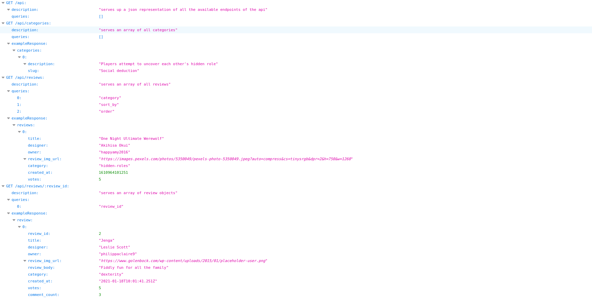

My Projects
Check out the projects below to find out more information:
2D6 Game Reviews

A React frontend designed to function as a board games review website.
Users can view board game reviews and leave comments and votes on other users' reviews.
See Boardgame Reviews RESTful API for information about the backend.
Simon game

A simple memory game created with HTML, CSS and Javascript.
Users are presented with an ever-longer sequence of flashing colours, which they must remember and repeat back.
DrumSim

A playful site built with HTML, CSS and Javascript, mainly used as an introduction to event listeners and integrating Javascript into an HTML page.
Users can control the drumkit either with mouse clicks, or by using the corresponding keys on their keyboard.
Boardgame reviews RESTful API
A RESTful API which connects to the NC Games database through 12 endpoints.
Built using a combination of Javascript, Express, Node.js and Heroku. It also makes use of CORS.
The API hosts tables containing data on users, board games, reviews, comments and votes.